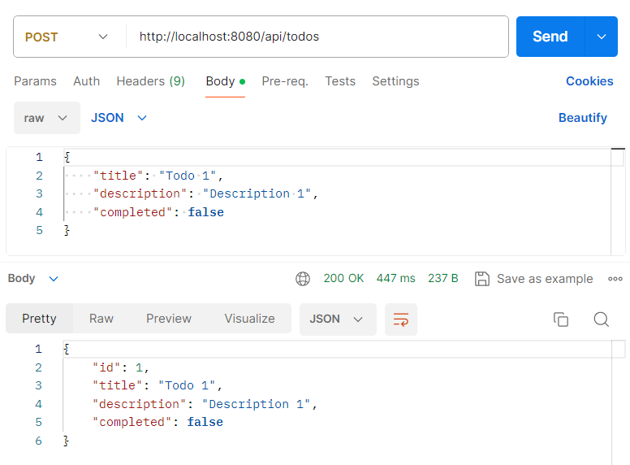
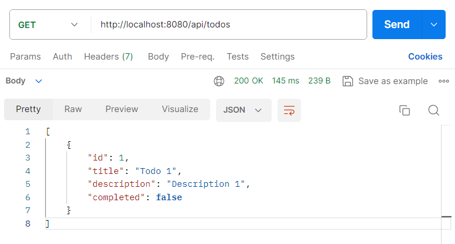
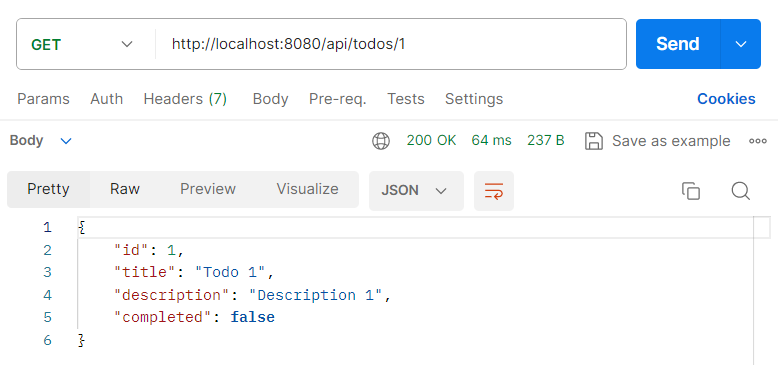
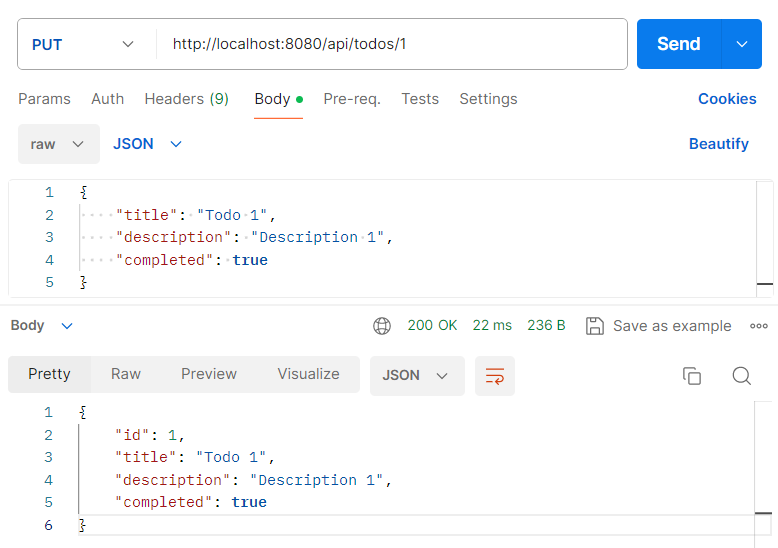
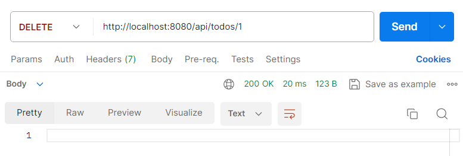
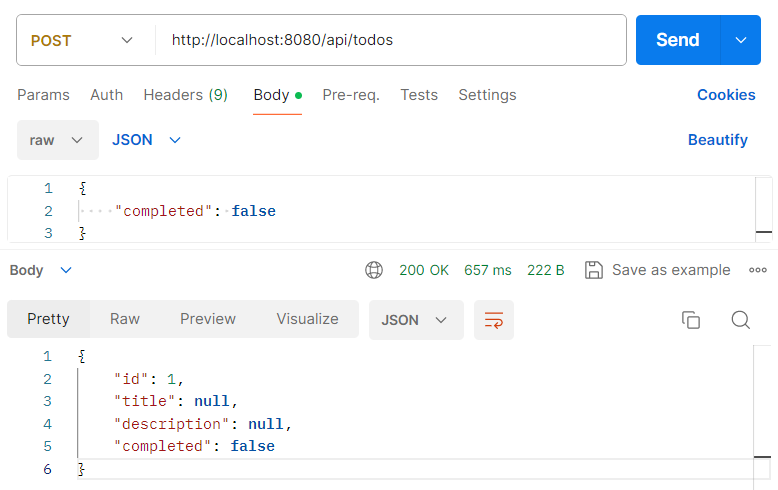

Tester notre API REST
Manitenant, we're going to start our project with the command
mvn spring-boot:run
and we're going to use Postman to test our REST API:
Create a Todo task

Retrieve all Todos tasks

Retrieve a Todo task using its id

Update a Todo task using its id

Delete a Todo task using its id

Create a Todo task without a title or description

Conclusion
We've now tested our REST API using Postman, checking that we can successfully create, retrieve, update and delete Todo tasks.
However, we have found that it is possible to create todo tasks without a title or description. In the next section, we will add a validation layer to correct this behaviour and ensure that the data respects the defined constraints.
previous-next-sections
First version of the project Add validation layer